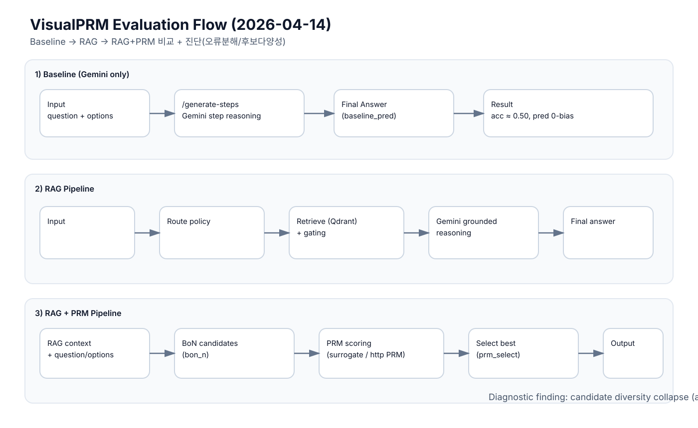

Baseline (단순 Gemini)
- 엔드포인트:
/generate-steps - 입력: question + options (+ image_url)
- 동작: Gemini가 step 생성 후 final_answer 선택
- 특징: RAG/PRM 없이 모델 단독 추론
- 결과: acc 약 0.50, 0번 쏠림
2026-04-12 기준: 안정성은 개선, 정확도/편향 개선은 제한적
1) Baseline → 2) Baseline vs RAG → 3) Baseline vs RAG vs RAG_PRM
/generate-stepsInput → Route → Retrieve(Qdrant)Grounding(retrieval_context)Gemini reasoning → final_answer/agent-answerInput → RAG → BoN 후보 N개PRM score(candidate별)best candidate 선택 → final_answerselection_mode=prm, bon_ngold=1, pred=0